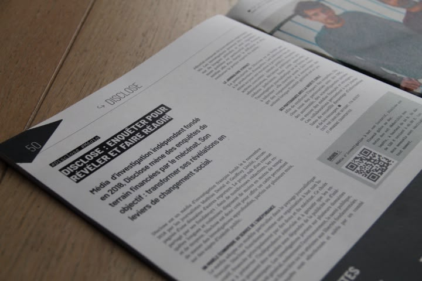
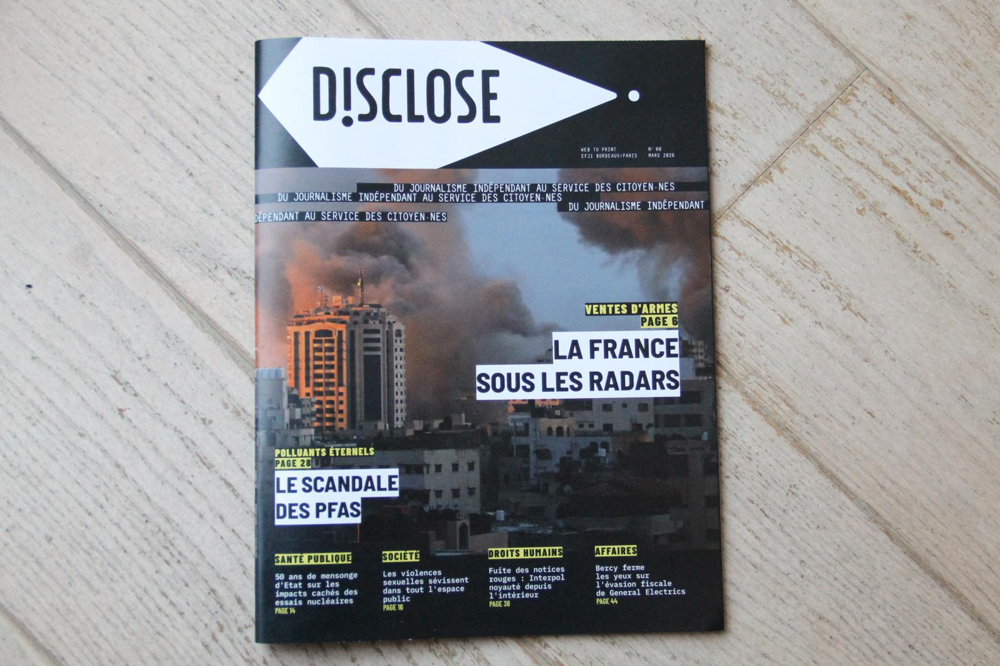
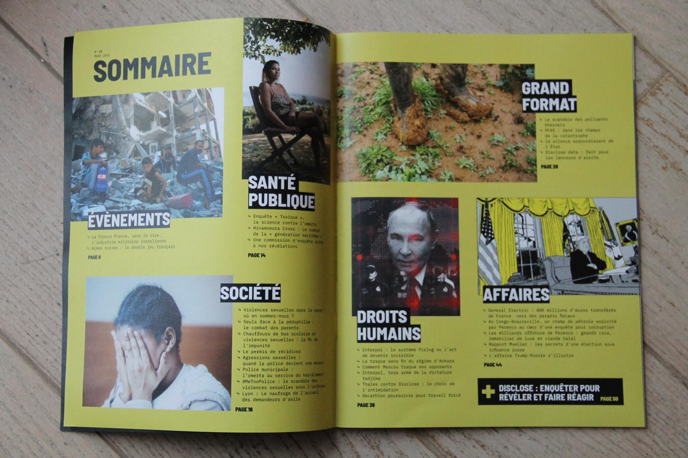

Disclose N°00 : notre promo adapte le web au papier !
En mars 2026, j'ai co-produit avec mes camarades de 1ère année de l'EFJ Paris un magazine d'investigation papier en partenariat avec Disclose. Ventes d'armes, polluants éternels, droits humains : nous avons retravaillé au format papier les articles de la rédaction du journal web.

Disclose X EFJ ©Alexandre Ligneul
EFJ-Disclose-Print.pdf
24Mo
Dans le cadre d'un atelier web-to-print à l'EFJ Paris, nous avons adapté et mis en page des enquêtes issues de Disclose, le média d'investigation indépendant fondé en 2019.

Couverture de notre magazine en papier avec Disclose ©Alexandre Ligneul
Ce numéro zéro couvre cinq grands dossiers que nous avons choisis pour leur importance : les ventes d'armes françaises à des pays en guerre, le scandale des polluants éternels (PFAS), les violences sexuelles dans l'espace public, le système Interpol comme outil de répression politique, et les montages fiscaux de grandes entreprises. Chaque sujet s'appuie sur les articles originaux de Disclose, disponible sur leur site Disclose.ngo.

Somaire ©Alexandre Ligneul